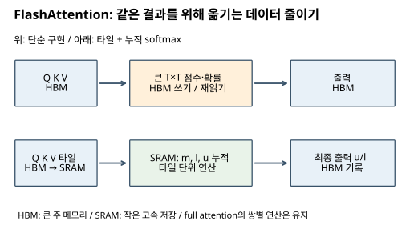
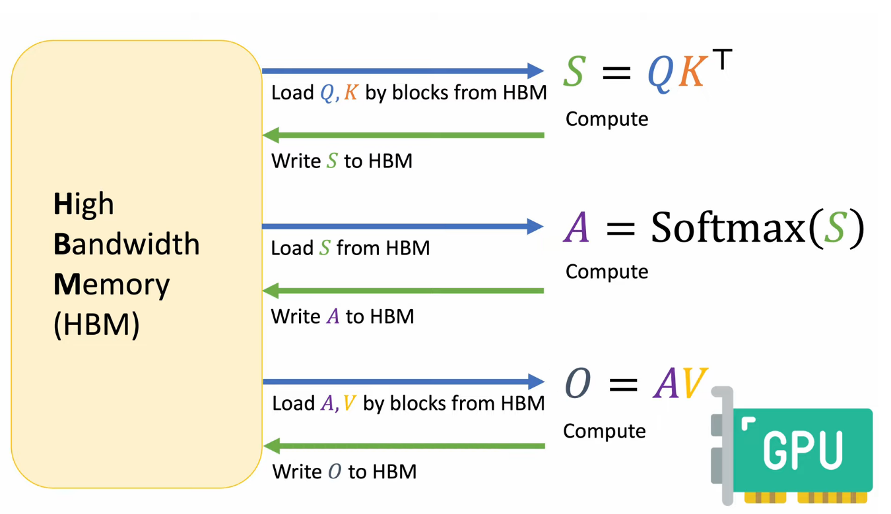
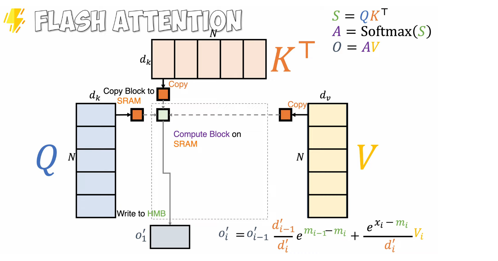

21. FlashAttention과 메모리 이동
같은 attention 수식을 계산해도 중간 행렬을 메모리에 쓰고 다시 읽는 횟수가 실행 시간을 바꾼다. 이 장의 목표는 FLOPs와 I/O를 구분하고, 타일링과 online softmax를 손으로 계산하는 것이다. 행렬 곱과 softmax(점수를 양수 확률로 정규화)가 선행 개념이다. 처음에는 1~4절, 복습은 5절의 실행 예와 문제를 읽는다.
1. 산술 연산량과 데이터 이동량
HBM은 GPU의 큰 주 메모리, SRAM은 칩 안의 작은 고속 저장 공간이다. 일반적인 attention을 단순 구현하면 [T,T] 점수와 확률을 HBM에 기록했다가 다시 읽는 일이 많다. FlashAttention은 Q·K·V를 작은 타일로 나누고 softmax의 누적 상태를 유지해 큰 중간 행렬의 저장·재읽기를 줄인다. 기본 full attention의 토큰 쌍 계산 자체는 남는다. 따라서 FlashAttention을 선형 attention이라고 부르면 안 된다. FlashAttention 원 논문
아래 그림의 위 경로는 큰 중간 행렬을 HBM에 쓰는 단순 구현, 아래 경로는 타일과 누적 상태로 출력까지 이어 가는 방식이다. 화살표는 데이터 이동을 뜻한다.


두 경로의 목표는 같은 softmax(QKᵀ/√dh)V다. 부동소수점 연산 순서에 따른 작은 수치 차이는 있을 수 있다. 원문 261쪽의 ‘2~3배’는 특정 조건의 성능 주장으로 읽고 GPU·길이·dtype·구현을 고정하지 않은 보편 배수로 사용하지 않는다. 265쪽의 메모리 접근 ‘32번’도 작은 도식의 접근 단위에 의존한다.
FLOPs는 부동소수점 산술 연산 횟수이고 I/O는 여기서 HBM과 칩 내부 저장 공간 사이 데이터 읽기·쓰기를 뜻한다. GPU 산술 장치가 연산하며 SRAM 자체가 계산하는 장치는 아니다. 262쪽의 ‘SRAM에서 연산’은 가까운 데이터를 사용한다는 축약이다. 그림의 SRAM 19TB/s·20MB, HBM 1.5TB/s·40GB, CPU DRAM 12.8GB/s·>1TB는 예시 계층 값이며 모든 GPU 사양이 아니다.
N개 토큰, head 폭 d에서 QKᵀ와 AV는 각각 약 2N²d FLOPs(곱셈·덧셈을 2회로 세는 근사)다. 전체는 약 4N²d, softmax 비용은 별도다. N=4,d=2이면 약 128 FLOPs다. S와 A 두 N×N 행렬을 FP16으로 쓰면 2×16×2=64 bytes의 중간 저장이 필요하다. N을 두 배로 하면 쌍별 연산과 이 저장은 네 배가 된다. FlashAttention은 S,A 전체의 HBM 물질화를 피하지만 full attention의 N² 쌍 계산은 유지한다. 학습 backward에서 재계산을 쓰면 FLOPs가 늘어도 I/O 감소로 시간이 줄 수 있다. 실측 속도는 별도다.
화살표 하나씩을 읽기 또는 쓰기로 이름 붙여 보자.

파랑은 HBM에서 계산 쪽으로 읽기, 초록은 결과 쓰기다. S=QKᵀ, A=softmax(S), O=AV의 각 단계 사이에 N×N 중간 행렬이 왕복한다. scaled attention의 1/√d와 mask는 도식에서 생략했으며 실제 계산에서는 softmax 전에 적용한다.
2. Tiling: 가져온 원소를 여러 출력에 사용
타일은 행렬의 작은 직사각형 조각이다. 265~266쪽의 A=B는 행별로 1~16을 채운 4×4 행렬이다. 왼쪽 위 C의 네 원소만 구한다고 하자. C11=1×1+2×5+3×9+4×13=90, C12=100, C21=202, C22=228이다. 각 출력마다 A 네 개와 B 네 개를 다시 읽으면 4×8=32회 원소 읽기다.
2×2 출력 타일을 유지하면 필요한 A 두 행 8개와 B 두 열 8개를 각각 한 번씩 가져와 재사용하므로 16회다. 첫 inner 타일은 [[1,2],[5,6]]×[[1,2],[5,6]]=[[11,14],[35,46]], 둘째는 [[3,4],[7,8]]×[[9,10],[13,14]]=[[79,86],[167,182]]이다. 합하면 위 결과가 된다. 곱셈의 수는 줄지 않는다. ‘N×N block이면 1/N 접근’은 이런 재사용 모형의 직관이고 실제 캐시 line·쓰기·대역폭·타일 용량까지 포함한 보편 공식은 아니다.
3. Softmax의 세 순회를 합치는 이유
267쪽은 x1…xN에 대해 먼저 최댓값 mN을 구하고, 다음에 분모 dN=Σexp(xj-mN), 마지막에 aj=exp(xj-mN)/dN을 구한다. 최댓값을 빼도 분자·분모에 같은 배수가 적용되어 확률은 변하지 않으며 큰 지수값의 overflow를 줄인다. 하지만 타일을 버리고 넘어가려면 미래의 최댓값을 미리 알 수 없다는 문제가 있다.
268쪽의 핵심은 현재 최댓값 mi로 정의한 부분 분모 l_i=Σ(j≤i)exp(xj-mi)다. 이전 l_(i-1)은 이전 기준 mi-1로 계산했으므로 exp(mi-1-mi)를 곱해 새 기준으로 옮긴다. 그 뒤 새 항 exp(xi-mi)를 더한다. 원문의 d′를 여기서는 l로 써 head 폭 d와 구별한다.
269쪽은 확률 배열 A까지 저장할 필요가 없음을 보인다. 분자 u_i=Σ(j≤i)exp(xj-mi)vj를 같이 갱신하고 최종 u/l만 출력하면 된다. 값 v가 벡터이면 u도 같은 폭의 벡터다.
4. Online softmax 계산과 타일 병합
한 query에 대한 점수를 순서대로 xj, value를 vj라 하자. 누적 최댓값 m, 정규화 분모 l, 가중합 분자 u를 유지한다.
초기: m=-∞, l=0, u=0
새 점수 x와 value v 도착:
x=-∞이면 masked 항이므로 상태를 바꾸지 않고 건너뛴다.
mnew = max(m,x)
lnew = exp(m-mnew) l + exp(x-mnew)
unew = exp(m-mnew) u + exp(x-mnew) v
최종: l>0이면 o = u/l; l=0이면 null (유효 key 없음)
점수 [0,ln 3], value [2,6]를 차례로 넣자. 점수에는 이미 scale·mask가 적용되어 있다고 가정한다.
| 단계 | m | l | u | u/l |
|---|---|---|---|---|
| 첫 토큰 x=0,v=2 | 0 | 1 | 2 | 2 |
| 둘째 x=ln3,v=6 | ln3 | (1/3)×1+1=4/3 | (1/3)×2+6=20/3 | 5 |
한 번에 계산한 softmax는 [1/4,3/4]이고 1/4×2+3/4×6=5로 같다. 두 번째 단계에서 최댓값 기준이 바뀌어 이전 분모·분자에 1/3을 곱하는 과정이 핵심이다. 실제 커널은 토큰 하나씩이 아니라 타일 단위로 이 원리를 확장한다. 마스킹된 점수 -∞는 갱신 전에 건너뛴다. 첫 항부터 mask라면 초기 m=-∞와 새 최댓값 -∞의 차이가 NaN이 되므로, 유효 key가 나중에 있더라도 이 처리가 필요하다. 모든 항이 masked이거나 입력이 비었으면 l=0이다. 이때 확률분포는 정의되지 않으므로 이 교재의 예제는 0/0 대신 null을 반환한다. null은 확률이나 출력 0을 뜻하지 않는 명시적 빈 결과다.
원문의 정규화된 출력 o′를 매 단계 유지하는 표기는 o_new=(exp(m-mnew)l/lnew)o_old+(exp(x-mnew)/lnew)v다. u=l o를 대입하면 위 분자형과 같다. 270쪽이 이 식을 하나의 루프로 합친다.
타일 안에서도 masked 항은 제외한다. 빈 타일의 상태는 (m=-∞,l=0,u=0)이다. 병합 전에 lA=0이면 B를, lB=0이면 A를 그대로 반환한다. 둘 다 비었으면 빈 상태를 유지하며 최종 출력은 null이다. 이 분기 없이 시작의 빈 타일끼리 지수 보정을 계산하면 -∞-(-∞)가 NaN을 만든다. 두 타일 모두 비어 있지 않을 때만, 상태 (mA,lA,uA), (mB,lB,uB)에 대해 m=max(mA,mB), l=exp(mA-m)lA+exp(mB-m)lB, u=exp(mA-m)uA+exp(mB-m)uB로 합친다. 이것이 토큰별 장난감 루프에서 GPU 타일로 넘어가는 연결이다. ‘online’은 전체 행을 저장하지 않고 누적한다는 뜻이며 인터넷 접속과 무관하다.
큰 S 행렬을 저장하는 화살표가 있는지 찾아본다.

왼쪽 Q는 N×dk, 위 Kᵀ는 dk×N, 오른쪽 V는 N×dv다. 작은 블록을 SRAM 계산 영역으로 가져오고 아래 출력으로 이어진다. 272쪽에서는 K/V 블록 표시가 뒤쪽으로 이동하고, 273쪽은 같은 끝 단계 그림을 반복한다. 각 블록에서 누적 max·분모·출력을 이어 가므로 블록마다 별도 softmax를 확정해 더하는 방식이 아니다. 그림의 HMB는 HBM 오기다. 읽기 자체가 없어지는 것이 아니라 큰 중간 행렬의 반복 왕복이 줄어든다.
5. 내부 실습과 예상 결과
다음 JavaScript는 GPU 커널이 아닌 한 query·스칼라 value의 교육용 검산이다. Node에서 실행할 수 있으며 점수는 유한 실수 또는 mask를 뜻하는 -Infinity, 유효 value는 유한 실수이고 두 배열 길이는 같아야 한다. 유효 key가 없으면 null을 출력한다.
const xs=[0, Math.log(3)], vs=[2,6];
let m=-Infinity,l=0,u=0;
for(let j=0;j<xs.length;j++){
if(xs[j]===-Infinity) continue; // masked value도 읽지 않는다
const next=Math.max(m,xs[j]);
const a=Math.exp(m-next),b=Math.exp(xs[j]-next);
l=a*l+b; u=a*u+b*vs[j]; m=next;
}
console.log(l===0 ? null : u/l); // 5; 전부 masked이면 null
활동: 두 입력의 순서를 같이 뒤집어도 5인지 확인한다. 점수에 1000을 더해도 exp(1000)을 직접 만들지 않아 같은 결과가 나오는 이유를 설명한다. 예상 결과는 두 경우 모두 5(부동소수점 허용 오차 내)다. 활동을 확장해 앞 mask xs=[-Infinity,0,Math.log(3)], vs=[999,2,6]과 뒤 mask xs=[0,Math.log(3),-Infinity], vs=[2,6,999]를 넣는다. 둘 다 5이며 999는 출력에 기여하지 않는다. xs=[-Infinity,-Infinity], vs=[999,999] 또는 빈 배열이면 null이다. 이 null 규약은 교육용 예제의 선택이며 실제 커널의 빈 행 출력 규약은 따로 정해야 한다.
6. 확인 질문과 해설
- FlashAttention은 N을 두 배로 해도 full attention 쌍 수가 두 배인가? 해설: 네 배다. 줄이는 핵심은 I/O이며 선형 attention이 아니다.
- 첫 타일 출력 2, 둘째 타일 출력 6을 단순 평균하면 왜 틀리는가? 해설: 점수 [0,ln3]에서는 가중치 1/4,3/4여서 5다. 타일별 분모를 함께 병합해야 한다.
- 265쪽 32→16은 FLOPs 감소인가? 해설: 같은 네 출력을 위한 원소 읽기 횟수 감소다. 2절의 곱셈을 세어 보자.
- 지원 커널이 있다고 항상 3배 빠른가? 해설: 아니다. GPU, 길이, dtype, batch, 비교 구현, prefill/decode 구간을 정해 측정해야 한다.
페이지별 원문 대조
- 261쪽: FlashAttention의 목적 — Exact attention과 I/O 인식
- 262쪽: GPU 메모리 계층 — 용량과 대역폭의 상충
- 263쪽: N제곱 중간 행렬 — S와 A의 크기
- 264쪽: 기본 attention의 왕복 — 중간 결과를 HBM에 쓴 뒤 읽는다
- 265쪽: 타일 없는 행렬 곱 — 네 출력의 32회 원소 읽기
- 266쪽: Tiling의 재사용 — 32회에서 16회로
- 267쪽: Softmax의 세 루프 — 최댓값·분모·확률 순회
- 268쪽: 최댓값과 분모 통합 — 기준이 바뀌면 이전 합 재조정
- 269쪽: 출력 누적 통합 — A 배열 대신 가중합 상태
- 270쪽: 하나의 루프 — 점수부터 출력까지 이어지는 누적
- 271쪽: 첫 블록의 SRAM 처리 — 큰 중간 행렬 없이 블록 처리
- 272쪽: 다음 블록으로 이동 — 누적 상태를 이어 간다
- 273쪽: 블록 처리의 마무리 — 반복 화면의 의미와 한계